地政学
アユタヤは首都ではありませんが、旧シャム王国の都としてタイ国家の記憶を支えます。三つの川に守られ、海へ通じる内陸港として外交と交易を集めた位置は、今もバンコク北方の物流軸に残ります。王都の地理も響きます。
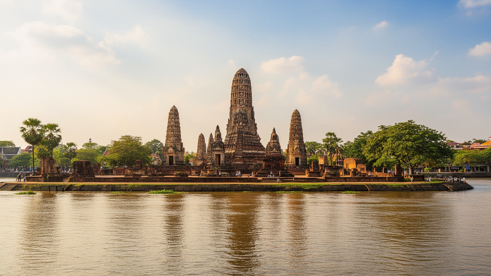
🇹🇭 タイ / アジア / World City Atlas
チャオプラヤー川、パーサック川、ロッブリー川に囲まれた旧都。王宮跡、仏塔、運河、日本人町、鉄道、工業団地、洪水の記憶が、バンコク北方の生活都市に重なります。
都市の骨格
アユタヤは古代の都という印象が強い一方、現在の県経済は工業団地、物流、農業、観光が支えます。遺跡の島と郊外の工場、川の水位と鉄道、寺院参拝と日帰り観光を一体で読む都市です。
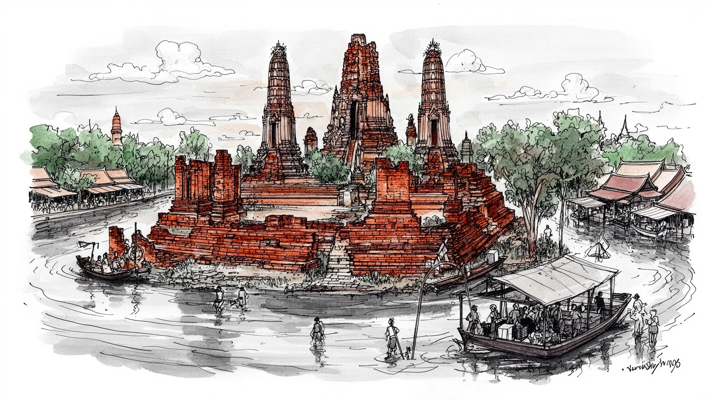
アユタヤは首都ではありませんが、旧シャム王国の都としてタイ国家の記憶を支えます。三つの川に守られ、海へ通じる内陸港として外交と交易を集めた位置は、今もバンコク北方の物流軸に残ります。王都の地理も響きます。
県経済は寺院観光だけでなく、電子部品、食品、自動車関連、倉庫、農業、鉄道輸送で動きます。工場労働者、案内人、屋台、修復職人、農家が近い距離で働き、洪水や世界需要の変化が雇用を揺らします。生活にも響きます。
巨大な仏塔、涅槃仏、僧院、祭礼、托鉢は、廃都の風景を現在の信仰につなぎます。王朝美術は観光資源であるだけでなく、バンコク王都が継承した儀礼、都市形態、仏教的な権威の源でもあります。祈りも響きます。
日帰り客は遺跡を巡り、住民には通勤、学校、家賃、洪水対策、交通事故、遺跡地区の規制があります。美しい仏塔のそばで市場、住宅、船着き場、工場勤務が続き、観光と生活の速度は常に交差します。日常もあります。
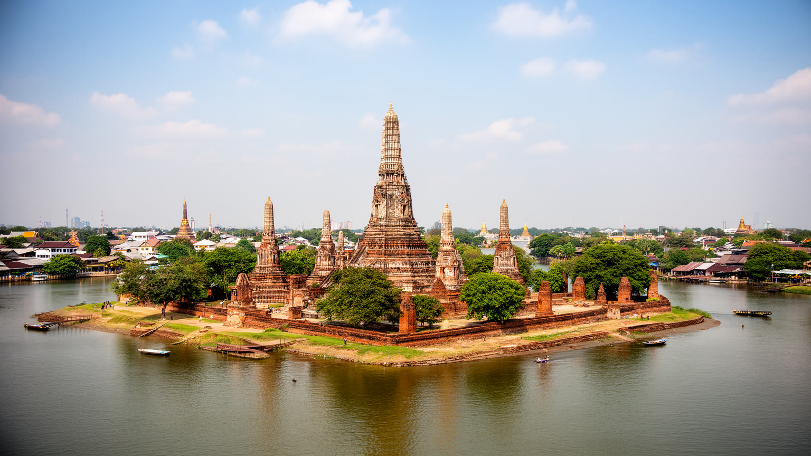
アユタヤの中心は、チャオプラヤー川、パーサック川、ロッブリー川に囲まれた島として理解すると見えやすくなります。水は防御であり、交通路であり、王権を演出する舞台でもありました。島の内部には王宮跡、寺院、運河、街路が配置され、周縁には商人、職人、外国人居留地、船着き場が広がりました。海に面していないにもかかわらず、川を下ればシャム湾へ通じ、インド洋と南シナ海を結ぶ交易の品、人、情報がここへ集まりました。現在の市街は、遺跡公園の静けさと住宅、学校、市場、道路が近く、古都の輪郭が日常の移動に重なります。島を歩くと、仏塔の高さ、堀の幅、道の曲がり方、川岸の集落が、王都の計画と水の条件を同時に語ります。アユタヤは破壊された都として有名ですが、都市の本質は滅亡の場面だけではありません。水を使って守り、交易を引き込み、多民族の居住を受け入れ、儀礼の中心を作った都市システムがあったからこそ、廃墟は今も強い意味を持ちます。現代の住民にとってその島は、記念碑であると同時に、通学路、参拝地、商売の場所、洪水時の不安を抱える生活空間です。王都の島を読むことは、古い石の配置だけでなく、川と人が作った都市の使い方を読むことでもあります。さらに駅や橋から島へ入る動線を見ると、王都の内側と外側が今も水際で切り替わることが分かります。
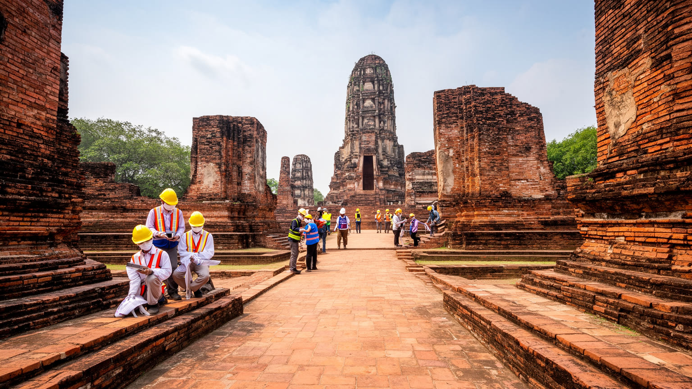
アユタヤ歴史公園の魅力は、完全に再建された都ではなく、焼かれ、崩れ、風雨にさらされた遺構が広く残っている点にあります。ワット・プラシーサンペット、ワット・マハータート、ワット・ラーチャブーラナ、ワット・チャイワッタナーラームなどの寺院跡は、王権、仏教、都市計画、職人技を示す一方、保存には難しさもあります。煉瓦、漆喰、基壇、仏像、塔は熱帯の雨、草木、地下水、観光客の踏圧、交通振動にさらされます。保存区域を広げれば景観は守りやすくなりますが、周辺住民の改築、商売、移動、土地利用には制約が生まれます。逆に開発を許しすぎれば、遺跡の静けさと都市の読みやすさは失われます。アユタヤの保存は、石を固定する技術だけでなく、誰がどこに住み、どの道を使い、観光収入をどのように修復へ戻すかという都市政策です。世界遺産は外から見に来る人のためだけにあるのではなく、タイの教育、仏教的記憶、地域の誇り、職人の仕事にも関わります。遺跡のそばで屋台が開き、子どもが通学し、僧侶が行事を続ける時、保存は生活と切り離せません。美しい廃墟を残すには、観光の量を管理し、修復の質を保ち、住民が古都の中で尊厳を持って暮らせる条件を整える必要があります。修復の説明、歩行導線、日陰、排水まで丁寧に扱われて初めて、遺産は消費される景色から学べる都市へ変わります。
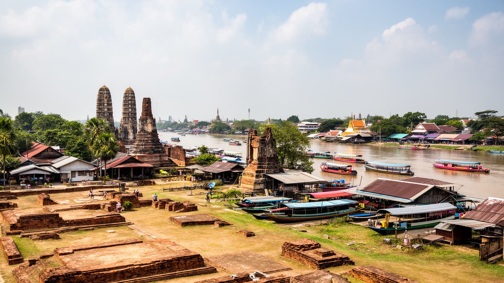
アユタヤはタイだけの内向きの旧都ではなく、近世アジアの国際都市でした。王宮の下流には日本人、ポルトガル人、オランダ人、ペルシア人、中国人、モン人などの居住地が置かれ、商館、教会、倉庫、住宅、墓地、船着き場が川沿いに並びました。日本人町の記憶は、朱印船貿易、山田長政、傭兵、商人、キリスト教徒、東南アジアへ渡った日本人の移動を考える入口になります。ただし外国人町は異国情緒だけで語れるものではありません。王権は外国人を交易、軍事、技術、外交に利用し、同時に居住地を管理していました。商人は米、鹿皮、錫、陶磁器、布、武器、香料、情報を運び、シャム王国はインド、中国、日本、イスラム世界、ヨーロッパとの関係を組み替えました。現在のアユタヤで外国人町跡を訪れると、遺構は王宮中心部ほど派手ではありませんが、世界都市としての厚みが見えてきます。都の壮麗さは寺院だけでなく、多言語の交渉、通訳、税、船荷、宗教、婚姻、移住者の生活によって支えられていました。アユタヤを国際史の都市として読むことは、国家の中心が外部世界と深く結びついていたことを確認することです。川沿いの居留地は、今日の観光者に、旧都がかつて世界の移動と商売を受け止める柔軟な港でもあったと教えます。残された資料や記念施設をたどると、交易の利益だけでなく、病、紛争、信仰の違い、王権への従属も見えてきます。
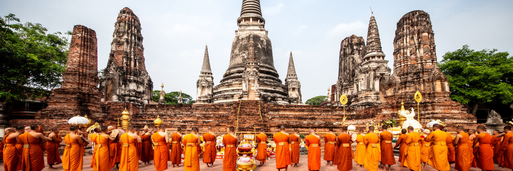
アユタヤの仏教景観は、観光用の美しい寺院群である前に、王権と社会秩序を支えた制度の跡です。王は寺院を建て、仏塔に聖遺物や王族の記憶を結び、僧団を保護することで徳と権威を示しました。巨大なプラーン、列をなす仏像、涅槃仏、礼拝堂、回廊は、信仰と政治を同じ空間に置きます。現在も市内には生きた寺があり、托鉢、葬儀、出家、祭礼、供養、学校行事が行われます。遺跡の仏像は首を失ったものも多く、破壊の記憶を強く感じさせますが、住民の信仰は廃墟の中で終わったわけではありません。花や線香を供える人、僧侶に相談する家族、仏教休日に寺へ向かう人の動きが、古都を現在へつなげます。アユタヤ様式の美術は、後のバンコク王朝にも大きな影響を与え、都市の名前や王都の構成にも継承されました。仏教を読む時に大切なのは、石造物を過去の芸術としてだけ見ないことです。寺は教育、福祉、相談、地域行事の場であり、観光客の視線とは別の意味で住民の日常を支えます。アユタヤの仏塔は、失われた王都の象徴であると同時に、現在へ残る祈りの時間を受け止める器です。そこに、廃墟と生活が同じ宗教空間に重なる旧都の深さがあります。僧院の鐘や供物の店は、遺跡を写真の対象から地域の暦へ戻し、王朝の記憶を今の共同体に接続します。参拝の作法を尊重することも、古都を理解する大切な入口です。
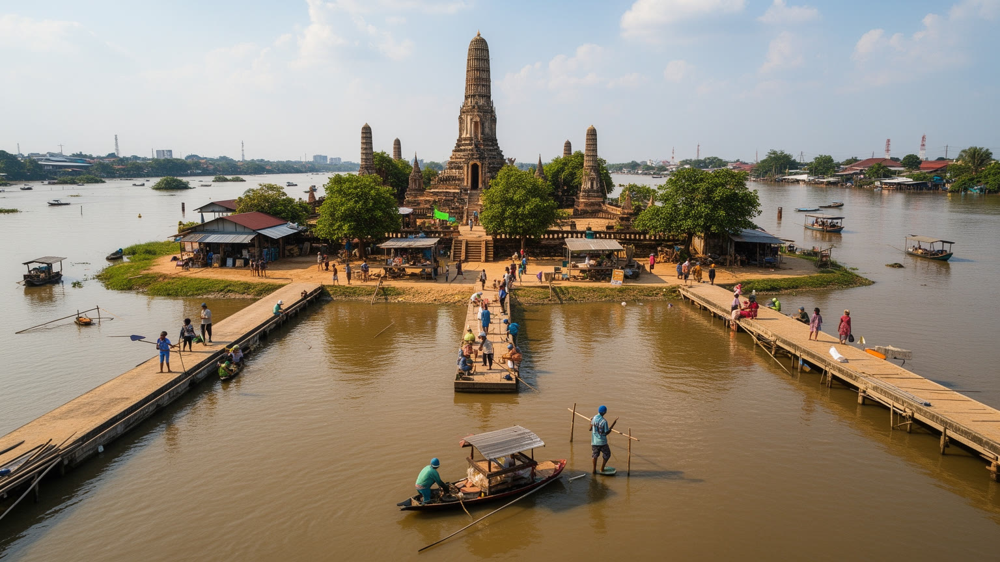
アユタヤは水によって栄え、水によって脅かされる都市です。三つの川と運河は王都を守り、船を通し、田畑と市場を結びましたが、雨季の増水は住宅、寺院、道路、工場、農地に大きな負担をかけます。とくに二〇一一年の大洪水は、アユタヤの工業団地とサプライチェーンを世界へ意識させました。電子部品や自動車関連の工場が止まり、労働者の生活も物流も大きく揺れました。歴史公園でも、煉瓦の基壇、仏塔、堀、地盤が水にさらされ、遺産保存と防災を同時に考える必要が明らかになりました。住民にとって洪水はニュースの出来事だけでなく、家具を上げる、店を閉める、学校や通勤の道を変える、家の修理費を捻出するという日常の焦点です。川沿いの美しい景観は、排水、堤防、ポンプ、避難情報、土地利用規制と切り離せません。水を完全に排除すれば古都の地理は失われますが、水に任せすぎれば生活と産業が危うくなります。アユタヤの水管理は、遺跡、住宅、農地、工場、観光、下流のバンコクまで関わる広域の焦点です。川を風景として眺めるだけでなく、水位の変化、堤の高さ、橋の位置、工業団地の防水壁を見ると、この都市が古代から現在まで、水との交渉で成り立ってきたことが分かります。気候変動で豪雨が激しくなれば、古都の保存と産業防災はさらに強く結びつきます。住民の避難訓練や早期警報も、遺産保護と同じ都市基盤です。
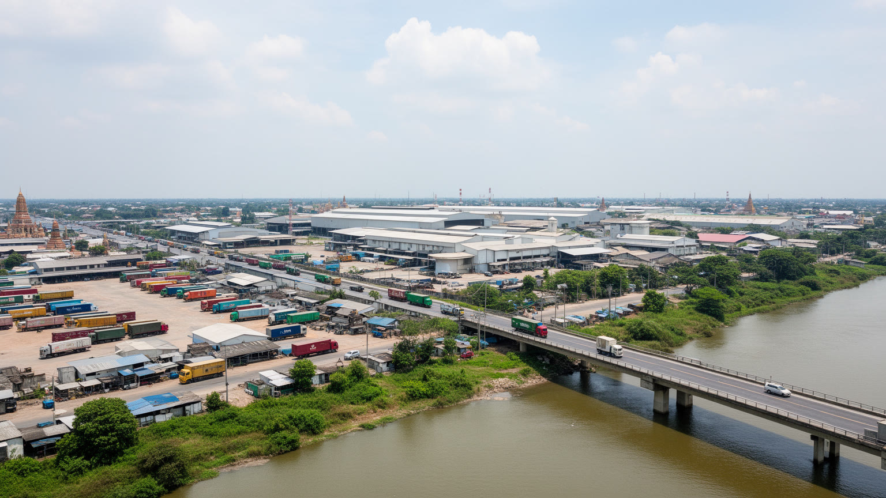
アユタヤの現代経済を理解するには、歴史公園の外側へ目を向ける必要があります。県内には工業団地や倉庫が集まり、電子部品、自動車関連、食品加工、包装、機械、物流が地域の雇用と税収を支えます。バンコクに近く、北部や東北部へ伸びる道路と鉄道の結節にあることが、工場立地を後押ししてきました。観光客が寺院を巡る同じ日に、別の地域では交代勤務の労働者が工場へ向かい、トラックが部品と製品を運び、食堂や寮、送迎車、修理工場が動いています。県GPPの大きさは、旧都の文化価値だけでなく、この生産基盤の厚みを示しています。ただし工業化は安定だけをもたらすわけではありません。洪水リスク、低賃金労働、移民労働者の権利、環境負荷、通勤交通、住宅需要、世界需要の変動が地域に影響します。工場の防災投資が進んでも、周辺の小規模事業者や労働者住宅が同じ水準で守られるとは限りません。アユタヤは、世界遺産都市と工業県という二つの顔を持ちます。この二つは矛盾するだけでなく、同じ交通網、水管理、土地利用を共有しています。遺跡の静けさを保ちながら、生産都市として働く人の生活をどう支えるかが、現代アユタヤの重要な焦点です。寺院の影の外側にある工場の明かりまで見て初めて、この都市の経済は立体的に見えます。技能訓練、労働安全、通勤住宅の質は、観光地の印象以上に地域の将来を左右します。
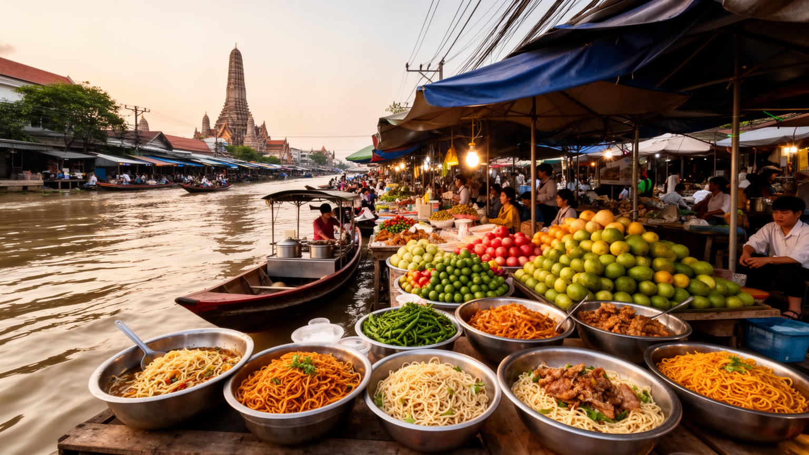
アユタヤの日常を知るには、市場と食を見るのが早い入口です。川魚、エビ、米、麺、香草、果物、菓子、托鉢用の供物、観光客向けの軽食が、朝の市場や寺院周辺の屋台に並びます。名物として知られるロティサイマイは、薄い生地と甘い糸状の砂糖を巻く菓子で、ムスリム系の商い、街道の土産文化、家族経営の店を結びます。舟運の記憶が残る町では、ボートヌードルや川沿いの食堂も都市の特徴です。食は観光客の楽しみであると同時に、住民の通勤、学校帰り、寺参り、工場勤務後の休息を支える生活基盤です。市場には女性の労働がよく見えます。仕入れ、調理、値付け、片付け、家計管理、観光客への対応が、家族と商売の境界をまたいで行われます。夜市では若者が甘味や串焼きを買い、遺跡の写真や店の評判がSNSで広がります。遺跡巡りの短い滞在では、食が古都の風景を柔らかくしますが、その背後には農地、川の漁、冷蔵物流、屋台規制、衛生管理、家賃の問題があります。観光地化が進むほど、地元の人が通う店と旅行者向けの店の距離も広がります。アユタヤの市場を歩くことは、王朝史の外側にある庶民の都市史を読むことです。甘い菓子、辛い麺、川魚の香り、寺の供物が、旧都を現在の暮らしへ引き戻します。食の動線は、寺院、川、農村、工業団地を静かにつなぐ都市の血流です。価格や仕入れ先の変化は、雨、燃料費、観光客数、工場勤務者の消費まで映します。
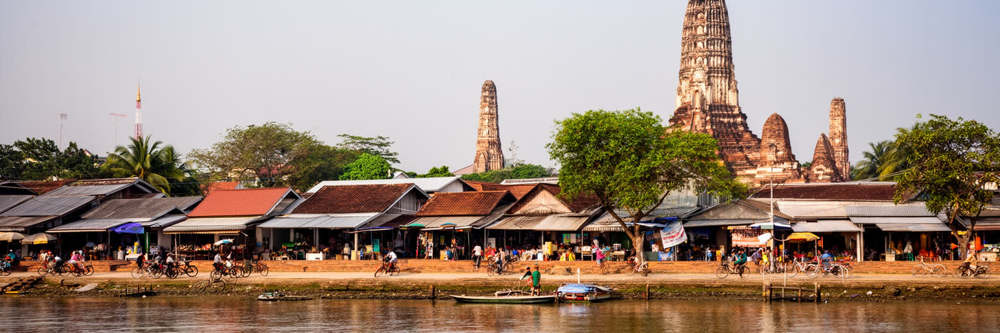
アユタヤは観光パンフレットでは寺院と仏塔の都市として見えますが、住民にとっては学校、病院、市場、住宅、職場、親族の家、寺、駅を行き来する生活都市です。市域の登録人口は大きくありませんが、周辺自治体や工業団地、観光の流入を含めると、昼間の人の動きはもっと複雑になります。遺跡地区に近い住宅では、景観規制や観光交通が生活に影響します。家の修理、駐車、排水、騒音、観光客の写真、寺院行事の混雑が、日々の小さな負担になります。一方で、遺跡の近くに住むことは誇りや商機にもなり、屋台、土産物、案内、レンタサイクル、清掃、警備などの仕事を生みます。郊外では工場勤務者の住宅、寮、送迎バス、幹線道路沿いの店舗が増え、旧都のイメージとは異なる都市景観を作ります。放課後の校庭ではサッカーやバドミントンが見え、旅行者の自転車も生活道路を使います。高齢者には暑さ、洪水時の避難、医療アクセスが課題になり、若者には教育、安定雇用、バンコクとの距離が重要です。世界遺産の街に住むことは、美しい風景を毎日見ることだけではありません。保存の責任、観光の期待、土地利用の制約、産業都市としての通勤を同時に引き受けることです。アユタヤを生活都市として読むと、古都の価値は遺跡の保存だけでなく、そこに住む人が普通の暮らしを続けられるかにかかっていると分かります。街灯、歩道、排水、学校への安全な道は、遺跡案内と同じくらい都市の質を決めます。
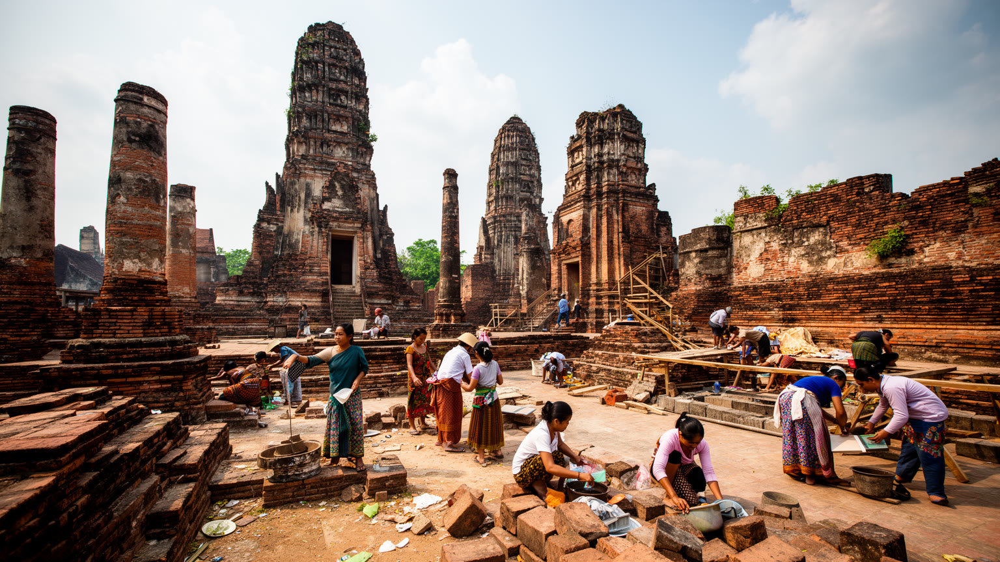
アユタヤの社会課題は、古都としての美しさの陰に隠れがちです。観光が増えれば収入は生まれますが、交通事故、混雑、廃棄物、景観を乱す開発、住民の静けさの喪失も起こります。保存規制は遺跡を守るために必要ですが、住民にとっては家の改築、商売、土地利用の自由を狭めることがあります。工業団地は雇用を支えますが、洪水時の脆さ、環境負荷、労働条件、移民労働者の生活、通勤交通を伴います。川沿いの低地では水害の影響が大きく、貧しい世帯ほど修理費や休業の負担を受けやすくなります。文化財を守る費用、観光の収益、工業の税収、防災投資が、どの地域と人に届くかが重要です。歴史都市の倫理は、遺跡をきれいに見せることだけではありません。住民が不当に排除されず、働く人が安全に通勤でき、洪水後に生活を立て直せ、子どもが自分の街の歴史を学べることまで含みます。旅行者の敬意も欠かせません。仏像や僧侶への配慮、私有地や住宅地での写真、服装、騒音は、観光と生活の関係を左右します。アユタヤを守るとは、王朝の遺構を保存するだけでなく、古都で働き暮らす現在の人びとの権利と尊厳を守ることです。保存と発展の利益を公平に配る設計が、旧都の信頼を長く支えます。行政、寺、事業者、住民が同じ情報を共有できる場も欠かせません。小さな合意の積み重ねが、遺跡と暮らしの摩擦を減らします。
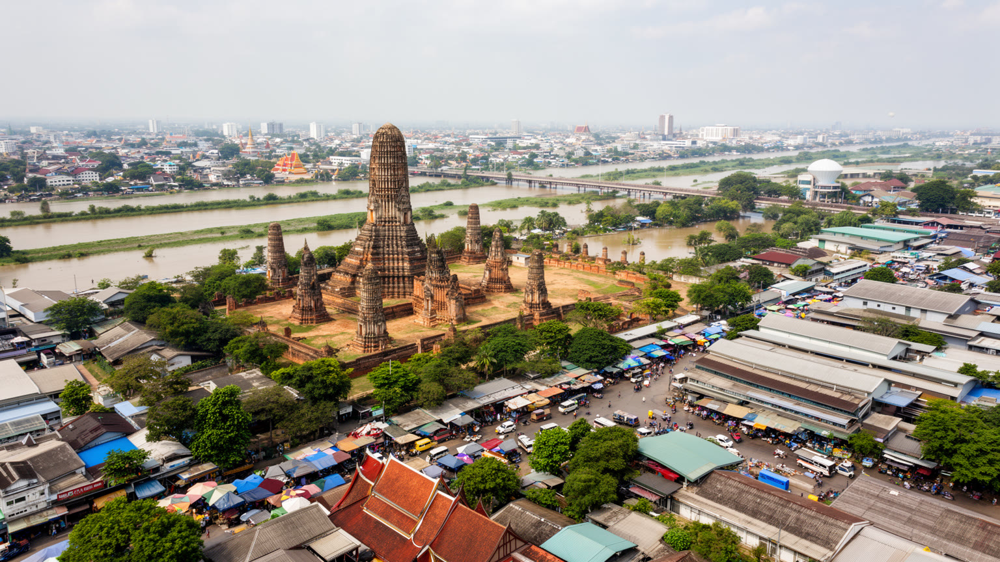
アユタヤは、廃墟の仏塔と夕景だけで語るには複雑すぎる都市です。三つの川に囲まれた王都、国際交易の港、仏教儀礼の中心、破壊された記憶、バンコク王朝への継承、日本人町、鉄道の日帰り観光、洪水リスク、工業団地の生産、農地と市場が、一つの地域に重なっています。人口規模だけを見れば巨大都市ではありませんが、都市史、国家像、宗教、産業、災害、観光が密集しているため、世界の都市を考えるうえで重要な場所です。遺跡を歩く時、石の崩れ方だけでなく、なぜこの島が選ばれ、なぜ外国人町が川沿いに置かれ、なぜ現在も工場と物流が集まるのかを見ると、都市の連続性が分かります。アユタヤの価値は、過去の栄光を保存することだけではありません。過去を見に来る人の関心を、現在の住民の暮らし、労働、防災、信仰、教育へ返せるかにあります。世界遺産は記憶の入口であり、そこから市場、駅、工場、川、住宅、僧院へ視線を広げることで、旧都は生きた都市として立ち上がります。アユタヤを読むことは、華やかな王都が失われても、地形、儀礼、交通、産業の力が形を変えて残り続けることを読むことです。その重なりこそ、この都市の現在の厚みです。バンコクから近い一日圏であっても、急がずに川岸と生活圏まで歩くほど、旧都は過去の名所ではなく現在の地域社会として見えてきます。